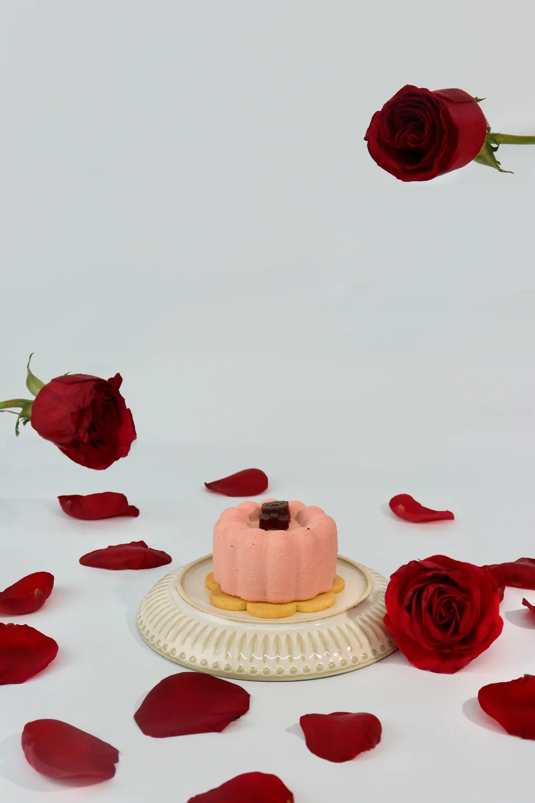

Dulce Suspensión — Fotografía de producto

- Contexto
- Fotografía digital · sexto semestre (2026-2)
- Herramientas
- Photoshop, para un retoque leve
- En conjunto con
- Cielo Caicedo y Diego Alejandro Quintero (equipo «Dulce Suspensión»)
- Producto
- Postre: mousse rosado sobre soletas, con mermelada de frutos rojos y un osito de chocolate
- Concepto
- Amor, romance y delicadeza
El pedido
Fotografiar un postre asignado con un efecto flotante. Nos tocó un postre común, de los que se consiguen en cualquier repostería, así que el reto era sacarlo de ese contexto y darle aire de ocasión especial.
Mi rol
La temática y la propuesta salieron de una idea que dimos Cielo y yo. La foto la tomamos entre los tres.
La escena
Una escena romántica sobre fondo blanco minimalista, con rosas rojas y pétalos como único elemento de color. El plato es de color hueso, para que combine con el mousse. Los pétalos están regados sin filas ni orden, como si acabaran de caer. La paleta queda en tres tonos: el rojo de las rosas, el rosado del mousse y el blanco del fondo; y el único punto oscuro es el osito de chocolate, donde termina la mirada.
Decisiones técnicas
- Composición
- Regla de los tercios, con el tercio superior como espacio negativo
- Plano y ángulo
- Plano medio, a la altura del producto
- Elemento flotante
- Dos rosas sostenidas desde el tallo por fuera del encuadre
- Iluminación
- Luz continua difusa en clave alta, desde el lateral superior izquierdo, sin flash
Edición
La foto se tomó en RAW y se retocó levemente en Photoshop con los ajustes permitidos en la actividad: orientación, balance de blancos, exposición, contraste y limpieza de imperfecciones del fondo. Las rosas estaban realmente ahí al tomar la foto: no se agregó ni se quitó ningún elemento.